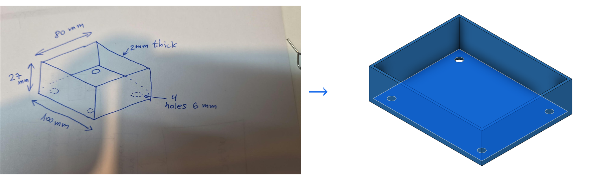
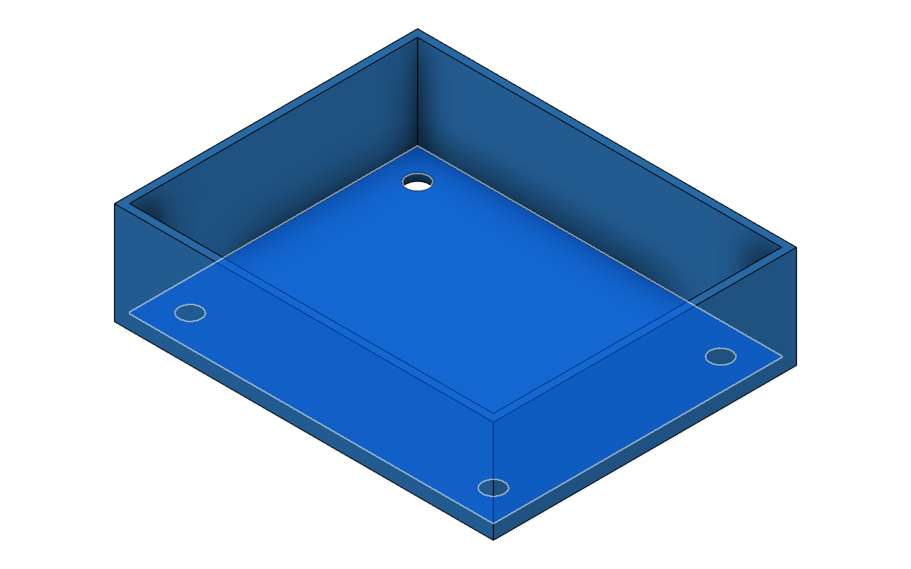
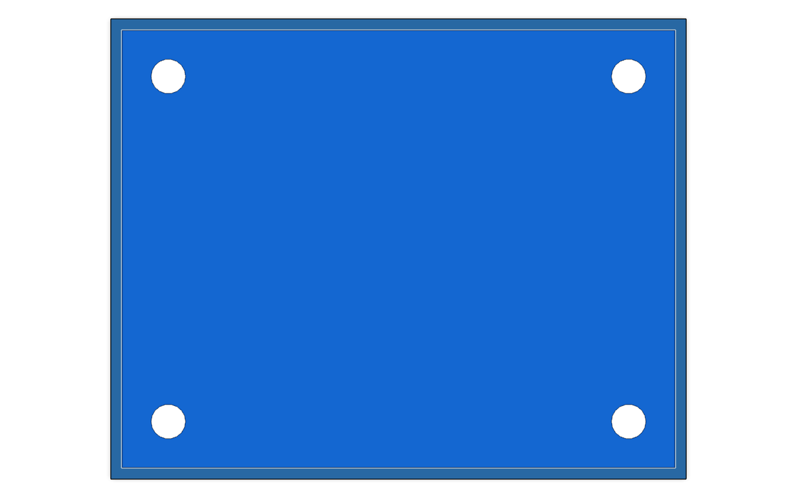
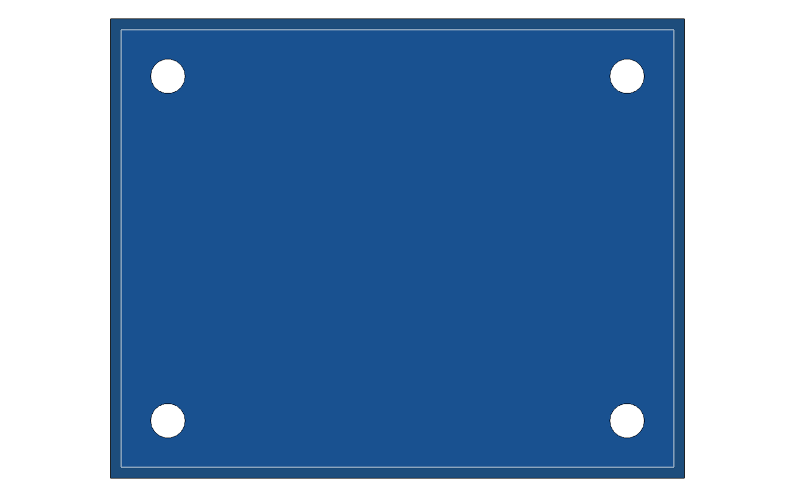
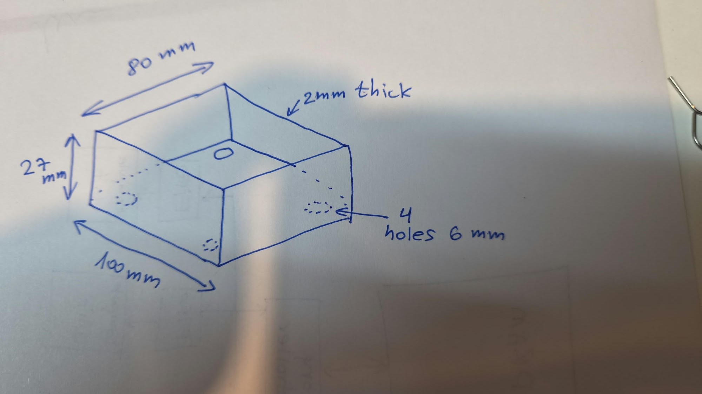

06 · Sketched box: from a paper note to an object
The owner drew a box on paper, photographed it with a phone and dropped the photo into the chat with one line: "The next example is read from paper sketch and design." In the same chat session the tray existed in Fusion, checked by numbers and by eye, with its archive exported. Nothing was typed into Fusion by a human.

Rebuild it yourself with Fusion running and the bridge installed:
python scripts\fusion.py run examples\06_sketched_box\design.py. STL and STEP:
python scripts\fusion.py export sketched_box.
1. The paper note: what was read
The photo was taken with the paper turned 90 degrees, so the first act was to rotate it upright
(media/brief.jpg). Then, following the sketch-to-design skill, read it in order: the view and
which way is up; every number and the edge it belongs to; the shapes; and what is not there.
| Written on it | Belongs to |
|---|---|
100 mm | the long lower edge |
80 mm | the short edge receding to the right |
27 mm | the vertical edge: height |
2mm thick | an arrow at the top rim: wall (and floor) thickness |
4 holes 6 mm | an arrow at a dashed circle; three dashed circles and one solid one are drawn |
Not on it: whether the top is open (the inner lines suggested it), where the four holes are (the dashed circles sit low on the walls, where a floor hole shows through a wall in an isometric view: hidden lines) and how far from the edges, and whether the corners are rounded. Each gap became one question; none was filled silently.
2. The spec: agreed in the chat before any code
- Open-top tray, four holes in the floor near the corners (recommended) · or a closed box with holes in the top · or holes in the side walls → the owner chose the recommendation.
- Hole centres 10 mm from the outer edges (recommended; the sketch gives no number, so it is marked GUESS) · or 8 mm · or centred on the inner floor corners → 10 mm.
- Spec v1 OK: outer 100 × 80 × 27 mm, open top, 2 mm walls and floor, 4 × Ø6 through-holes in the floor at 10 mm from the edges, sharp corners → "build it".
| Parameter | Value | From |
|---|---|---|
length | 100 mm | the sketch |
width | 80 mm | the sketch |
height | 27 mm | the sketch |
wall | 2 mm | the sketch ("2mm thick") |
hole_d | 6 mm | the sketch ("4 holes 6 mm") |
hole_inset | 10 mm | GUESS, confirmed in chat |
Up: the floor lies on XY at z = 0; the open top faces +Z.
3. The script, step by step
d, r = new_design("SketchedBox")
add_param("length", "100 mm", "mm", "outer length (the 100 on the sketch)")
add_param("width", "80 mm", "mm", "outer width (the 80)")
add_param("height", "27 mm", "mm", "outer height (the 27)")
add_param("wall", "2 mm", "mm", "wall and floor thickness ('2mm thick')")
add_param("hole_d", "6 mm", "mm", "hole diameter ('4 holes 6 mm')")
add_param("hole_inset", "10 mm", "mm", "hole centre to outer edge (GUESS: not on the sketch)")
sk = sketch_on("xy", name="outline") # 1. the footprint, centred on the origin
prect(sk, "length", "width") # a fully constrained, parametric rectangle
tray = extrude(sk, "height", "new").bodies.item(0) # 2. up by `height`
tray.name = "Tray"
shell(tray, top_face(tray), "wall") # 3. open the top, leave `wall` everywhere
hx = eval_mm("length/2 - hole_inset") # 4. hole centres computed from the parameters
hy = eval_mm("width/2 - hole_inset")
sk2 = sketch_on("xy", name="floor holes") # sketched on the underside (z = 0) ...
for sx in (-1, 1):
for sy in (-1, 1):
circle(sk2, sx * hx, sy * hy, eval_mm("hole_d"))
extrude(sk2, "wall", "cut", toward=(0, 0, 1)) # 5. ... and cut upward through the floor
fit()
result = {"doc": active_doc_name(), "bodies": body_info(), "params": params()}Five features, in the order a person would do them by hand. The rectangle, the extrude and the shell stay linked to the
parameters: change height in Modify › Change Parameters and the tray grows. The hole positions are numbers
computed from the parameters when the script runs, because circle() is a numeric helper (see below). The script
ends with result, so a run prints the evidence itself.
What you will see




What was verified
Fusion 2706.1.14, Windows 11, 2026-10-27. Every row has its number or its picture.
| Check | Expected from the spec | result / seen |
|---|---|---|
| bounding box | x −50..50, y −40..40, z 0..27 mm | [-50, -40, 0] .. [50, 40, 27] |
| volume | 216 − 182.4 (cavity 96 × 76 × 25) − 0.226 (four holes) = 33.374 cm³ | 33.3738 cm³ |
| faces | 11 for an open shelled box + 4 hole cylinders = 15 | 15: a hole that stopped short would add a floor face each |
| parameters | six, word names | length, width, height, wall, hole_d, hole_inset |
| by eye, isometric | the drawing's view and orientation; one hole visible, three hidden | media/iso.png: 100 along the lower edge as drawn; one hole visible, three as hidden edges |
| by eye, top and bottom | four holes 10 mm in from the corners, 2 mm rim | media/top.png, media/bottom.png |
| archive | sketched_box.f3d re-opens with the same body and parameters | re-imported with importManager: 33.3738 cm³, 15 faces, 6 parameters, 5 timeline features; then closed |
| printed | — | not yet: nobody has printed this one |
What it taught this blueprint
- Reading a photo of a sketch works when you read it in order: view and up-direction, every number with its edge,
shapes, then the gaps; each gap becomes one question with a recommended answer. The owner's three answers took under a minute.
Recorded in the
sketch-to-designskill, whose status no longer says "not practised yet". - Dashed circles on a hand drawing are hidden lines. The three dashed holes sat low on the walls, exactly where a floor hole shows through a wall in an isometric view, and Fusion's own isometric reproduced the pattern. Trust the drafting convention before guessing "holes in the walls".
- Numeric versus parametric helpers.
circle(),hole_at()andpattern_rect()take numbers;prect(),extrude()andshell()take expressions. A fully parametric design needs a parametric circle (backlog, Epic 2); until theneval_mm("length/2 - hole_inset")makes the numbers follow the parameters at build time. - Cut holes from the underside. A sketch on the XY plane at z = 0 plus
extrude(..., "wall", "cut", toward=(0, 0, 1))avoids sketching on a face, whose sketch axes may not be the model's; the face count proves the cut went through. - Gotcha 16: in a script run through the bridge, the helpers' private names are not there (
_appraisedNameError); useapp,design(),root()as the skills show. - Fusion's own camera makes the eye check honest:
ViewOrientations.IsoTopRightViewOrientation, Top and Bottom (thefusion-filesrecipe) gave the drawing's view and two more without a human touching the mouse.
The Babook course (babook.co.il/courses/fusion360, Hebrew) teaches sketch, extrude and shell by hand in lessons 2 and 5. This example is not one of its objects; it uses the same three operations from a script, starting from a drawing instead of a lesson plan. Examples 01 to 05 remain reserved for the course's objects.